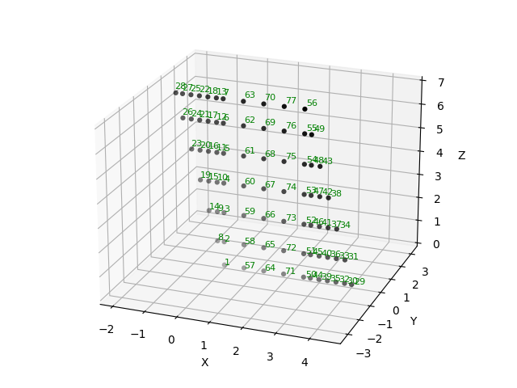
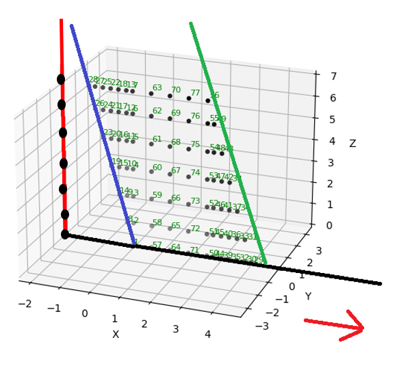
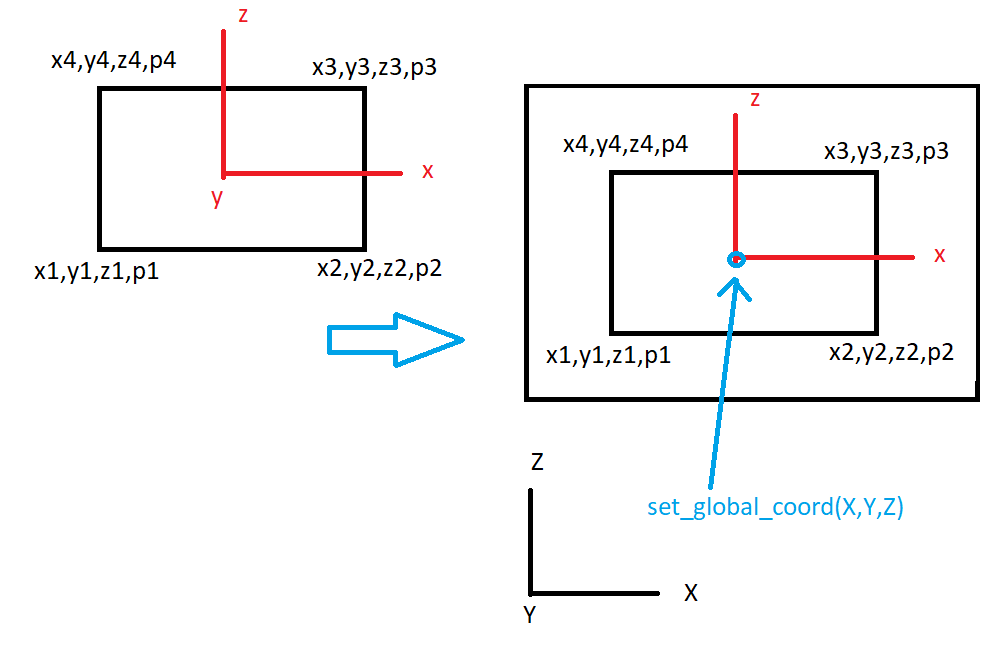

Package design#
This page details the design decisions of ospgrillage module. In outlining these processes, the developers welcome any improvements to its procedures via pull requests. Also, any issues within each process can be reported by raising an issue in the main repository.
Grillage model#
The ospgrillage module generates a two-dimensional (2-D) grillage model of a bridge deck in OpenSees - a plot of 2-D mesh nodes is shown in Figure 1. All information pertaining grillage model is handled by the OpsGrillage object.

Model space#
The model has 6 degrees-of-freedom at each nodes. The grillage plane lies in the x-z plane of the coordinate system. For a 2-D model, the intended model plane is the x-y plane. Development for one-dimensional (1-D) models in 2-D space is yet to complete in release 0.1.0 but we welcome any pull request for it.
Coordinate system#
The module adopts the following coordinate system for grillage models:
global x direction defines the length of the bridge model - typically the span of the model.
global z direction defines the width of the bridge model - the slabs elements are layed in this axis direction.
global y direction is the vertical axis - typically the direction of loads
The main reason behind selecting the coordinate system is consistency:
The selected coordinate system is consistent with geometric transformation (from local to global) of
OpenSees. The geometric transformation is used in Section definition, with local X being the axial direction of beam/truss members; where y and z axes being the vertical and horizontal axis of the local coordinate system respectively.The selected coordinate system is consistent between 1-D and 2-D problems where the working axis for 1-D models is typically x (horizontal axis) and y (vertical axis).
Meshing#
A Mesh class object handles and stores information of the grillage mesh, such as:
Mesh dimension
Nodes
Elements
Transformation of sections
Control points for mesh
Grouping of common grillage elements
Meshing algorithm#
Figure 2 shows an annotated diagram of the bridge mesh nodes in Figure 1 which we will use as an explanatory example.

Meshing algorithm is controlled by the Mesh class object. The following components are generated at pre-meshing stage:
Control points at start of the span (start_span_edge). A line of nodes/points located at the starting edge of the model. The positions of points are determined based on the number of longitudinal members, width of mesh, and skew angle of starting edge. By default, this line of nodes have a reference point coinciding the origin of global coordinate system i.e. [0,0,0].
Control points at the end of the span (end_span_edge). A line of nodes located at the end edge of the model. The positions of points are determined similar to start_span_edge. By default, skew angle is set to equal that of start_span_edge - unless specified otherwise by users. In contrast to start_span_edge, the reference point of second construction line is [L, 0, f(L)] where
Lis the length of the model, andf(L)is the z coordinate of the reference node based on the defined sweep path of the model - this is next explained.Sweep Path. A line of nodes which dictates the sweeping of mesh points of start_span_edge and end_span_edge. By default, the sweep path of the model is a straight line which starts at the origin of model space (also the reference point of start_span_edge) and ends at the reference point of end_span_edge. Current version of ospgrillage supports a straight line, curve line option can be a good addition to the module later on.
Meshing types and rules#
There are two types of meshing algorithm (and its respective kwarg for mesh_type=), namely:
orthogonal meshing -
Orthooblique meshing - -
Oblique
A rule is applied to both meshing type:
When skew angles are sufficiently small (less than 30 degrees angle), orthogonal mesh is not allowed and meshing proceeds with oblique type as the selected meshing type.
When skew angles are sufficiently large (greater than 12 degree angle), oblique mesh is not allowed and meshing preceeds with orthogonal mesh as the selected meshing type.
An error exception will be returned when the above rules are not met.
Note
As of version 0.1.0, the grillage wizard allow users to freely choose between orthogonal and oblique meshes for angles between 11 to 30 degrees. The numbers of 11 and 30 degrees are selected based on common industrial practice of grillage analysis.
Meshing steps#
Starting at start_span_edge, algorithm checks the angle of the construction line relative to the tangent/slope of the sweep line at the first position (i.e. @ [0,0,0])
If mesh type for the given angle of construction line is permitted, a for loop procedure is initiated. The iteration: (1) goes through every point in the construction line, (2) find the point on the sweep path whose normal vector intersects the current point of the construction line, (3) create the nodes bounded between the current point and the intersection point on the sweep line - see figure below. If mesh type is not valid, the process skips to step 3.
If angle is not permitted, the construction line is taken as the sweep node line. An iteration goes through all points on construction line and assigns them as nodes. Then the process move to the step 4.
Similar to step 2, step 4 comprise the process of step 2 but conducted for the second construction line instead.
Remaining uniformly spaced nodes between the two construction lines are now defined. The algorithm spaces the nodes evenly based on the number of transverse beam specified.
While nodes are generated, elements are also created by linking the generated nodes. Node linking is based on the grid numbering allocated to each node. For example, A node with x grid = 1 and z grid = 1 forms a longitudinal beam element with node having x grid = 2 and z_grid = 1.
During element generation, elements are characterized into Longitudinal, Transverse, and Edge elements. Longitudinal elements are linked by recording the nodes with common z grid grouping across the sweep path.
Grid groups#
Grid groups for elements in the z direction is defined based on the number of longitudinal beams. For the example bridge, there are 7 longitudinal beams (2 edge, 2 exterior and 3 interior beams). Therefore, starting from 0, the nodes that coincide with edge beams are numbered 0 and 6, while nodes for exterior beams are 1 and 5. The interior beam consist of the remaining groups (2,3,4) by this default.
Grid groups for elements in x direction is defined based on the number of times (or loops) through each intersection point with the sweep path. In other words, the total number of groups for x grid varies depending on the (1) number of long beams and (2) number of transverse beams.
All nodes defined during an iteration step for an intersecting point is set to have the same x grid group.
Mesh variables#
Node information is stored as dictionaries. Elements are specified as
lists; a typical element list is [2, 2, 3, 0, 2], where the entries
are the element tag, node_i, node_j, grouping index, and geometric
transformation tag.
Dictionaries are used to store information of mesh:
Common element group as key: return z groups
Z group as key, return longitudinal elements within the z group
X group as key, return transverse elements within the x group
node tag as key, return x spacings between vicinity nodes
node tag as key, return the z spacings between vicinity nodes
Local vs global coordinate system#
In ospgrillage, local coordinate system refers to a basic coordinate system of components which is independent of the global coordinate system i.e. the coordinate system of the grillage model space.
The definition of the following components within ops-grillage requires attention between basic and global coordinate system
Load objects (Point, Line, Patch) - takes either local or global coordinate.
Path objects (Path for moving load)
Compound load object - defined in local and set to global via
set_global_coord()
For LoadCase, all load object inputs can be either local or global. Note when local coordinate is defined for a load object, a global reference coordinate needs to be defined or else the module raises an Error regarding its point/vertices values.

OpenSeesPy dispatch layer#
ospgrillage uses a thin proxy object, _OpsProxy, to mediate every call to OpenSeesPy. Understanding this layer is useful when extending the package or debugging unexpected behaviour.
Motivation#
Two competing needs drove the design:
Live execution — the default workflow where every OpenSeesPy command runs immediately as part of the Python session.
Script serialisation — an optional mode (
pyfile=Trueoncreate_grillage()) where the equivalent Python commands are written to a.pyfile that can be inspected or replicated outside of ospgrillage.
Before _OpsProxy, these two modes required parallel code paths: one that called ops.node(...) directly and one that appended the string "ops.node(...)\n" to a buffer. This duplication was a persistent source of bugs, because any new feature had to be implemented twice.
How _OpsProxy works#
_OpsProxy is a tiny __getattr__-based proxy:
class _OpsProxy:
def __init__(self, py_file=False, filename="output_model.py"):
self._py_file = py_file
self._filename = filename
def __getattr__(self, name):
# Returns a callable that either runs ops.<name> or appends to file
...
def _dispatch(self, call: tuple) -> None:
"""Dispatch a (func_name, args, kwargs) tuple through the proxy."""
name, args, kwargs = call
getattr(self, name)(*args, **kwargs)
When py_file=False (the default), getattr(proxy, "node") returns a wrapper that calls openseespy.opensees.node directly. When py_file=True, the same wrapper instead formats the arguments into a ops.node(...) source line and appends it to the target file.
Tuple pipeline#
All load-assignment helpers in ospgrillage.load and ospgrillage.osp_grillage build (func_name, args, kwargs) tuples rather than command strings:
# Example tuple from _assign_load_to_four_node:
("load", (node_tag, Fx, Fy, Fz, Mx, My, Mz), {})
# Example from Analysis._time_series_command:
("timeSeries", ("Constant", counter, "-factor", load_factor), {})
These tuples are stored in the load-case dictionary and dispatched during evaluate_analysis():
for load_dict in self.load_cases_dict_list:
self._ops._dispatch(load_dict["time_series"])
self._ops._dispatch(load_dict["pattern"])
for call in load_dict["load_command"]:
self._ops._dispatch(call)
The result is a single code path that works identically in live and script modes — there is no eval() or string interpolation anywhere in the analysis loop.
Shell stress extraction pipeline#
For shell_beam models, ospgrillage extracts shell section stress
resultants alongside the standard nodal displacements and element forces.
This section describes the data flow from OpenSeesPy through to the
stresses_shell DataArray and the plot_srf contour renderer.
Extraction: OpenSeesPy → ele_stresses#
During extract_grillage_responses() in the Analysis class, each
element tag is queried with:
ele_stress = ops.eleResponse(ele_tag, "stresses")
For 4-node shell elements (e.g. ShellMITC4), OpenSeesPy returns a
flat list of 32 floats: 8 stress resultants at each of 4 Gauss
points. The 8 resultants at each GP are, in order:
Index |
Symbol |
Meaning |
|---|---|---|
0 |
N11 |
Membrane force per unit length in local 1-direction |
1 |
N22 |
Membrane force per unit length in local 2-direction |
2 |
N12 |
In-plane shear force per unit length |
3 |
M11 |
Bending moment per unit length about local 2-axis |
4 |
M22 |
Bending moment per unit length about local 1-axis |
5 |
M12 |
Twisting moment per unit length |
6 |
Q13 |
Transverse shear in the 1–3 plane |
7 |
Q23 |
Transverse shear in the 2–3 plane |
Beam elements return an empty list for "stresses", so only shell
elements populate Analysis.ele_stresses.
Storage: Results.basic_load_case_record_stresses#
The Results.extract_analysis() method copies the per-element stress
dict into basic_load_case_record_stresses, keyed by load case name:
self.basic_load_case_record_stresses[lc_name] = {ele_tag: [32 floats], ...}
DataArray assembly: stresses_shell#
When Results.compile_results() builds the xarray Dataset, the stress
data is packed into a stresses_shell DataArray with three dimensions:
stresses_shell (Loadcase × Element × Stress)
The Stress coordinate contains 32 labels of the form
N11_gp1, N22_gp1, …, Q23_gp1, N11_gp2, …, Q23_gp4. These are
generated in Results.__init__:
_gp_labels = ["gp1", "gp2", "gp3", "gp4"]
_sr_labels = ["N11", "N22", "N12", "M11", "M22", "M12", "Q13", "Q23"]
self.stress_component_shell = [
f"{sr}_{gp}" for gp in _gp_labels for sr in _sr_labels
]
Why a separate “Stress” dimension?#
The forces_shell array uses a Component dimension with labels like
Vx_i, Vy_j, etc. If stresses_shell also used Component,
xarray would attempt to auto-align the two arrays along that shared
dimension during Dataset operations (merge, concat, arithmetic). Since
the stress labels are unrelated to the force labels, this would produce
NaN-filled expansions. Using a distinct Stress dimension avoids this.
Contour rendering: plot_srf pipeline#
plot_srf() dispatches to one of three
extraction helpers depending on the requested component:
Shell forces (
Vx–Mz) →_extract_shell_contour_data()— readsforces_shell, extracts the_i/_j/_k/_lcolumns for the component, and averages at shared nodes.Displacements (
Dx,Dy,Dz) →_extract_shell_disp_data()— readsdisplacementsdirectly at each shell node.Stress resultants (
N11–Q23) →_extract_shell_stress_data()— readsstresses_shell, averages the 4 GP values per element, then averages contributions from neighbouring elements at shared nodes.
All three return (node_values, element_quads) which feed into
_triangulate_shell_mesh().
Triangulation and coordinate conventions#
_triangulate_shell_mesh() builds deduplicated vertex arrays and
triangle indices for Plotly Mesh3d. Each quad element is split into
two triangles. Shared nodes get a single vertex so that intensity
interpolation is smooth across element boundaries.
The coordinate mapping from the ospgrillage model space to Plotly’s display axes is:
Model axis |
Plotly axis |
Label |
|---|---|---|
x (span) |
x |
|
z (width) |
y |
|
−y (vertical, inverted) |
z |
|
The y-axis inversion ensures that deflections render downward (gravity direction) in the 3-D view.
Further development#
ospgrillage is developed as a open-source package. In turn, the developers welcome contributors to add/improve on the current release of ospgrillage.
Update Sept 2021
The initial release of ospgrillage contains core algorithms to generate meshes of grillage models. However the release comes with limitations and further development are required to extend beyond these limitations.
The current version of ospgrillage is limited to straight meshes. However, the developers have coded the module in a way where adding in curve meshing in future developments is just a matter of adding curve line functionality to the SweepPath class. Notably, the curve mesh is also possible with the current meshing rules - i.e. the sweep nodes have been coded to be always orthogonal to the gradient of the sweep path (straight or curve).
Current version of ospgrillage is limited to a single span mesh, where the support edges lies on the start and end edge of the mesh. Multi-span mesh is possible with a few more developments. This can be done by introducing intermediate edge construction lines, a feature to be introduced to ospgrillage.mesh.Mesh. In tandem with this, the EdgeControlPoints class will need to be reviewed as current edge control points are only recognized as end supports - catering to current meshing procedures for single span configuration.
The developers also acknowledges that there are conflicts between the adopted coordinate system of ospgrillage and the default coordinate system for the OpenSees’s opsvis module. The opsvis module default isotropic angle is x - y with z axis plane being the model plane of a 2-D model in 3-D space. Currently it is not easy to alter the coordinate system of ospgrillage. However, the developers are hoping that opsvis can cater to multi isotropic views of the model space as oppose to the current fixed coordinate system. It would require substantial rework of the entire ospgrillage module if one decides to “fit” ospgrillage’s coordinate system to opsvis - since the module assume the model plane of the 2D grillage is the y axis.